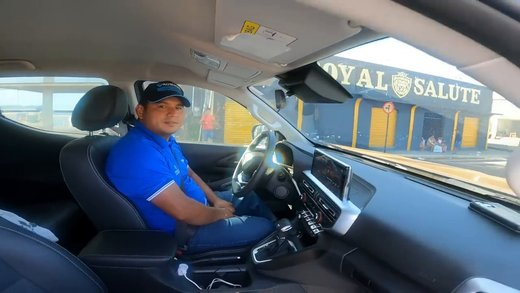

00:00:23.200
Motorista de camisa azul sentado ao volante da caminhonete, com o painel e o câmbio no primeiro plano.
Juruti (PA) · confirmado
O grupo embarca para iniciar o percurso de Juruti a Juruti Velho e menciona a travessia de balsa no caminho.
Transcrição · 00:00:15 | 00:00:23 | 00:00:31
Turismo Aqui — quadro de vídeo publicado no YouTube